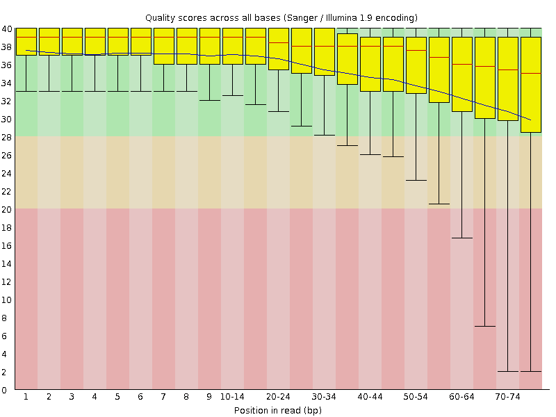
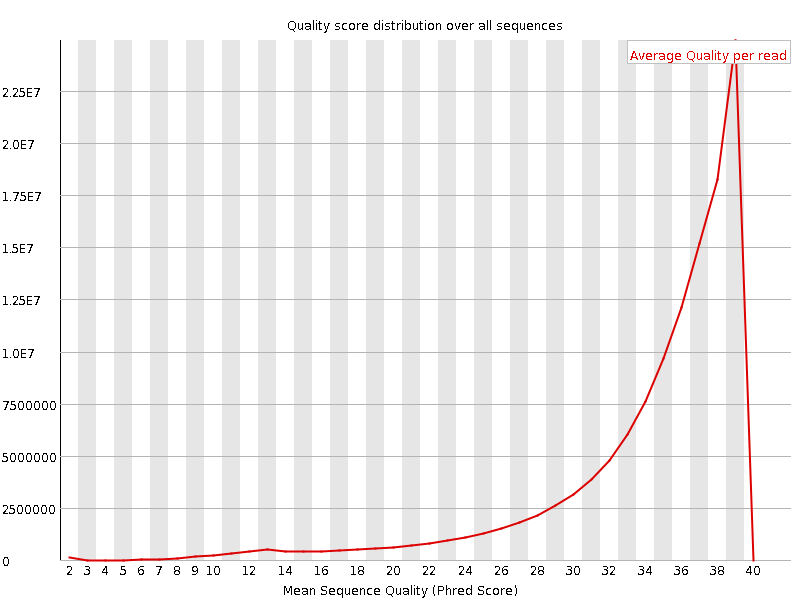
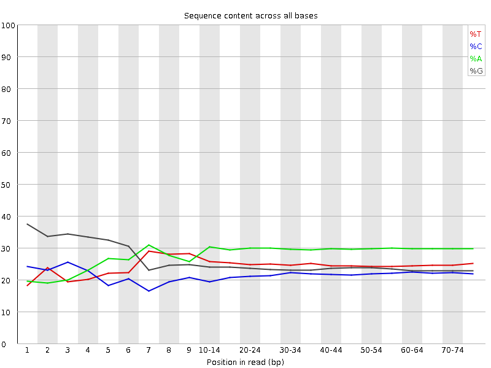
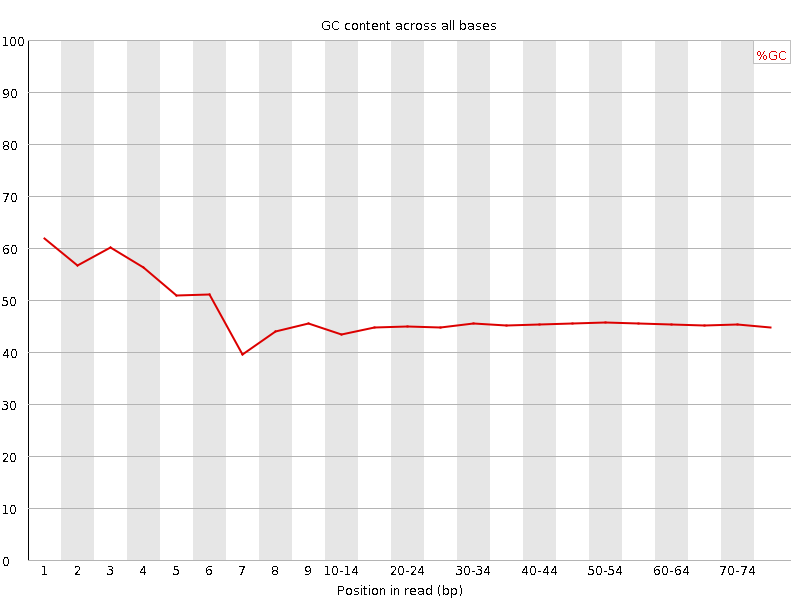
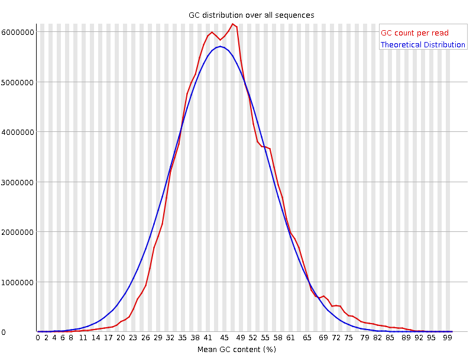
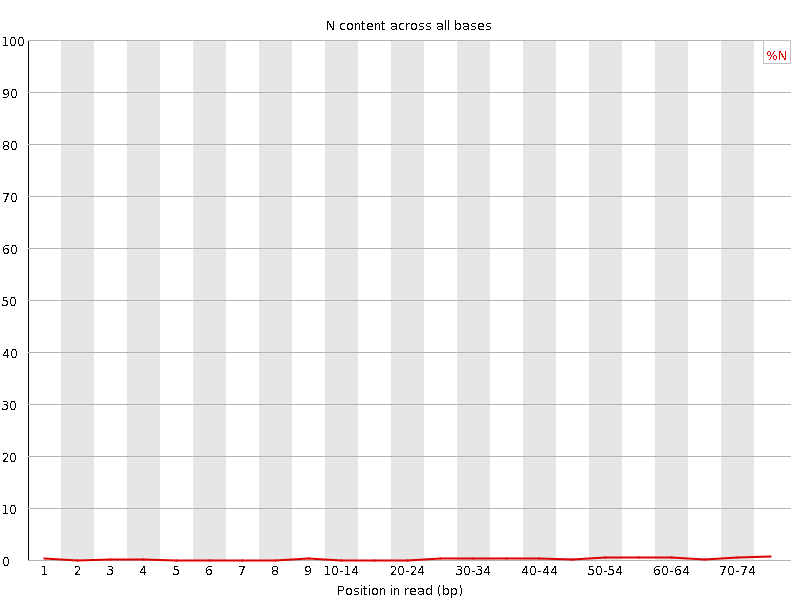
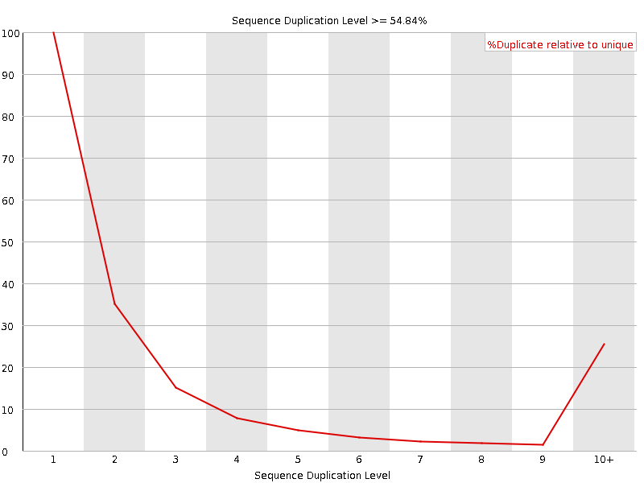
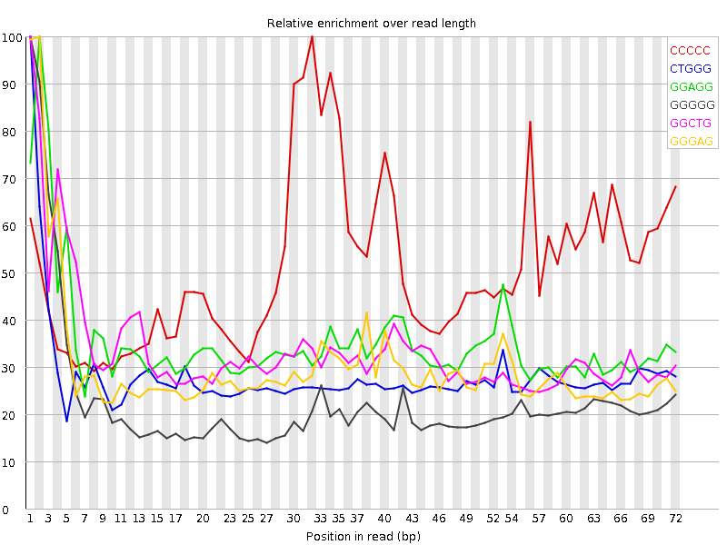

![[OK]](Icons/tick.png) Basic Statistics
Basic Statistics
| Measure | Value |
|---|---|
| Filename | SRR317069_1.fastq |
| File type | Conventional base calls |
| Encoding | Sanger / Illumina 1.9 |
| Total Sequences | 125001968 |
| Filtered Sequences | 0 |
| Sequence length | 76 |
| %GC | 46 |
Per base sequence quality

Per sequence quality scores

![[WARN]](Icons/warning.png) Per base sequence content
Per base sequence content

![[FAIL]](Icons/error.png) Per base GC content
Per base GC content

Per sequence GC content

Per base N content

Sequence Length Distribution

Sequence Duplication Levels

Overrepresented sequences
| Sequence | Count | Percentage | Possible Source |
|---|---|---|---|
| CCGTCGGCATGTATTAGCTCTAGAATTACCACAGTTATCCAAGTAGGAGA | 299172 | 0.2393338319281501 | No Hit |
| CCCGTCGGCATGTATTAGCTCTAGAATTACCACAGTTATCCAAGTAGGAG | 289446 | 0.23155315442713673 | No Hit |
| GCTGGATAGTAGGTAGGGACAGTGGGAATCTCGTTCATCCATTCATGCGC | 270780 | 0.2166205895254385 | No Hit |
| GTCGGCATGTATTAGCTCTAGAATTACCACAGTTATCCAAGTAGGAGAGG | 246008 | 0.19680330152882075 | No Hit |
| CGCTGGATAGTAGGTAGGGACAGTGGGAATCTCGTTCATCCATTCATGCG | 200947 | 0.16075506907219253 | No Hit |
Kmer Content

| Sequence | Count | Obs/Exp Overall | Obs/Exp Max | Max Obs/Exp Position |
|---|---|---|---|---|
| CCCCC | 11352045 | 2.6520646 | 5.209139 | 32 |
| CTGGG | 16520920 | 2.3862498 | 8.477853 | 1 |
| GGAGG | 21613465 | 2.3485537 | 6.650235 | 2 |
| GGGGG | 17927410 | 2.338737 | 10.322982 | 1 |
| GGCTG | 15251015 | 2.2028272 | 6.531913 | 1 |
| GGGAG | 20265190 | 2.2020476 | 7.2457404 | 2 |
| GCTGG | 14425330 | 2.083567 | 10.312471 | 1 |
| CACAG | 16924270 | 1.9338231 | 5.0208583 | 30 |
| GGCAG | 15605255 | 1.9052684 | 5.791824 | 1 |
| GGGGA | 17192635 | 1.8681792 | 8.544759 | 1 |
| TTCAT | 15479455 | 1.8082845 | 5.213792 | 42 |
| GTGGG | 13675555 | 1.7579942 | 10.166329 | 1 |
| TCACT | 12763860 | 1.7001758 | 5.158293 | 52 |
| TGGGG | 13221725 | 1.6996542 | 7.6153426 | 1 |
| CTGGA | 14073855 | 1.693195 | 5.5988564 | 3 |
| GTGTG | 12893215 | 1.6332109 | 6.013739 | 1 |
| GGCAT | 13016545 | 1.5659924 | 5.2252374 | 4 |
| CATCC | 10107525 | 1.5351727 | 5.2604437 | 36 |
| GCTCT | 9387605 | 1.5012544 | 5.5231724 | 17 |
| GGGCA | 12291430 | 1.5006787 | 5.977906 | 1 |
| GGGTG | 11380565 | 1.4629729 | 6.195215 | 2 |
| ATCCA | 12982280 | 1.4617273 | 7.094661 | 37 |
| GGGGC | 9812685 | 1.4383378 | 6.3534093 | 2 |
| GGGGT | 11149260 | 1.4332386 | 7.424351 | 3 |
| GGGCT | 9890365 | 1.4285452 | 6.0945787 | 3 |
| ACCAC | 10881690 | 1.3970513 | 5.186674 | 28 |
| CGGGG | 9213935 | 1.3505734 | 8.4424925 | 1 |
| GTGGT | 10462430 | 1.3252982 | 5.318909 | 1 |
| GGCGG | 8036275 | 1.1779526 | 6.241812 | 1 |
| TTACC | 8559025 | 1.1400819 | 5.0226426 | 26 |
| GCGGG | 7616430 | 1.116412 | 5.7115946 | 1 |
| CCCGT | 4771715 | 0.8701109 | 6.6654234 | 1 |
| CCGTC | 4726945 | 0.86194724 | 6.311829 | 2 |
| GTCGG | 5434355 | 0.7849277 | 5.0758195 | 1 |